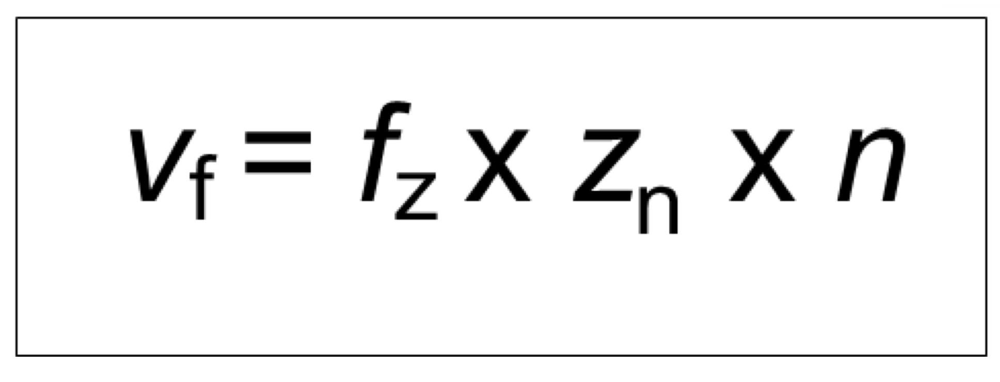
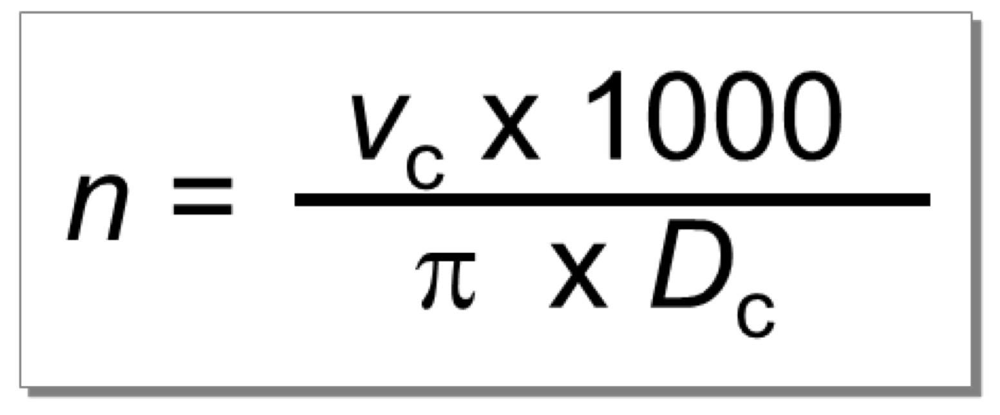

การหาความเร็วตัดและความเร็วรอบ
เส้นผ่านศูนย์กลางของชิ้นงาน ( d )
มิลลิเมตร
ความเร็วรอบ ( n )
Enter
รอบ/นาที
ความเร็วตัด ( v )
Enter
เมตร/นาที

การหาความเร็วฟีดและความเร็วรอบ
Feed per tooth ( Fz )
มิลลิเมตร/ฟัน
จำนวนฟัน ( z )
ฟัน
ความเร็วรอบ ( n )
Enter
รอบ/นาที
ความเร็วฟีด ( Vf )
Enter
มิลลิเมตร/นาที

ความหมายตัวแปร
V=ความเร็วตัด(เมตร/นาที)
N=ความเร็บรอบ(รอบ/นาที)
π=3.14
D=ขนาดเส้นผ่านศูนย์กลางของชิ้นงาน,ดอกกัด,ดอกสว่าน(มิลลิเมตร)
Z=จำนวนฟันของดอกกัด(ฟัน)
vf=ความเร็วฟีด(มิลลิเมตร/นาที)
fz=Feed per Tooth(มิลลิเมตร/ฟัน)